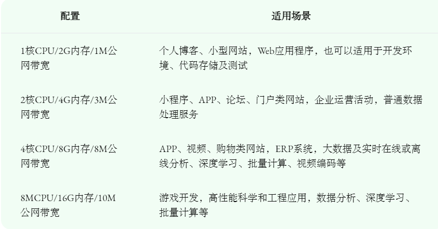

服务器维护管理笔记
Part 0 前言
服务器的维护和管理是一件重要但是琐碎的工作，其中涉及很多细节处理。这些工作本身可能没有很高的技术门槛，但是却需要耗费相当的精力。因此，本笔记专门用于记录这方面的知识踩过的坑。
本博客初稿的背景是2023敏捷软件工程课程，无特殊说明时，以下以此为背景。
Part 1 服务器选购
厂商
课程组提供了500元额度的经费，我们结合服务器租用、域名租用、DNS解析等服务最终选择了腾讯云这一高性价比厂商（不过还是得通过新人优惠才便宜）。
配置
这里主要借用一下课程组的图，方便快速锚定配置范围：

也可以参考文章：如何选择云服务器配置？
域名
参考资料：
主要流程包括：
- 腾讯云实名认证
- 使用DNSPod（已被腾讯云收购）查询想要注册的域名是否可用，在此界面可以购买域名和（可选）DNS解析服务
- 创建实名信息模板交由注册局审核
- 根据域名所属进行备案（须和腾讯云实名认证一致）
操作系统
由于熟悉且资料较多，因此选用Ubuntu 20.04 LTS。后文在不强调时也以此为默认配置
Part 2 GitHub Actions
参考资料：
- 利用GitHub Actions自动化打包部署服务器：有用，其中
appleboy/ssh-action套件很有用，可以直接在服务器执行指令
加密
参考资料：
- GitHub文档：加密机密：GitHub官方中文文档，介绍的较为精要
Part 3 Conda
参考资料：
Part 4 NPM
避免直接使用 apt-get安装nodejs，而采用NPM进行nodejs环境管理
安装
参考资料：
- ubuntu16.04安装node.js、npm：有用，照着来就行，对Ubuntu20.04也适用
Part 5 Vue
Part 6 Django
Part 7 腾讯云与Ubuntu
生成ssh key
使用 ed25519算法生成密钥
参考资料：
- Ubuntu系统中防火墙的使用和开放端口：介绍如何放开端口，有用；需要注意的是可能需要打开防火墙，再开放端口，再关闭防火墙，否则无法通过ssh连接服务器
- 管理密钥：介绍如何在腾讯云服务器配置ssh公钥
Part 8 创建与管理用户
为服务器上的每个用户配置账户是服务器管理的基本任务，特别是涉及到较多用户同时使用时（毕竟你不能允许每个人都登录 root 账户，这太危险混乱了）
本节以 Ubuntu 22.04 为例，且都在管理员账户和权限下进行
创建用户账户
默认方式创建用户
创建名为 username 的账户，家目录为默认目录（多数为 /home/username），需要根据提示设置用户密码（不能包含用户名）等信息
1 | sudo adduser username |
指定家目录位置创建用户
Ubuntu
创建用户 username，并设置其家目录为 /mnt/data/username
1 | sudo adduser --home /mnt/data/username username |
设置用户对其家目录有合适的权限
1 | sudo chown -R username:username /mnt/data/username |
CentOS
创建用户 username，并设置其家目录为 /mnt/data/username
正常创建用户
1
useradd username
重新指定用户家目录
1
usermod -d /mnt/data/username username
设置仅有该用户拥有家目录的读、写和执行权限
1
chown username:username /mnt/data/username
从原来的家目录拷贝
.bashrc和.bash_profile到新的家目录1
2cp /home/username/.bashrc /mnt/data/username
cp /home/username/.bash_profile /mnt/data/username设置 SSH 密钥
1
2
3
4
5cd ~
mkdir .ssh
vim authorized_keys
chmod 700 .ssh
chmod 600 .ssh/authorized_keys设置
.ssh的 SELinux 权限1
restorecon -v authorized_keys
可能报错，报错则需要
1
chcon -v -t ssh_home_t authorized_keys
1 | useradd -d /mnt/data/username -m username |
参考文章：Linux创建用户并指定目录为根目录
远程终端登录遇到 /usr/bin/xauth: file /mnt/data/username/.Xauthority does not exist
在下述目录创建空的 .Xauthority 并设置合适的权限
1 | touch /mnt/data/username/.Xauthority |
删除用户账户
仅删除用户账户，不删除家目录等
1 | sudo userdel username |
删除用户以及家目录
1 | sudo userdel -r username |
将用户添加到 sudo 组
当希望用户具有 sudo 权限，且不想直接赋予 root 权限
Ubuntu
可以使用 sudo 组管理
1 | sudo usermod -aG sudo username |
CentOS
CentOS 使用 wheel 组关联
1 | sudo usermod -aG wheel username |
切换用户身份
需要有切换的用户密码
1 | su - username |
无参数时默认切换到 root
1 | sudo su |
为用户设置仅其可读写执行的目录
一般用于在数据盘设置用户的数据目录
1 | sudo chown -R username:username /mnt/data/username |
迁移用户家目录
以下旧家目录为
/home/username，新家目录为/data/newhome/username，可能需要 sudo 权限
- 创建新的家目录
mkdir /data/newhome/username - 迁移数据
rsync -avx /home/username /data/newhome/username - 更新用户配置
usermod -d /data/newhome/username username
Part 9 查看配置信息
查看操作系统
1 | lsb_release -a |
查看内存
1 | free -h |
查看文件系统与磁盘
显示文件系统的磁盘空间使用情况
1 | df -h |
- -h 表示以人类可读的格式显示结果
查看磁盘分区
1 | fdisk -l |
- -l 表示列出系统上所有的磁盘分区
查看文件系统类型
1 | blkid <device> |
其中 device 是形如 /dev/sda 的硬盘设备名。
结果形如下：
1 | [root@localhost ~]# blkid /dev/sda |
格式化
1 | mkfs.ext4 /dev/sda |
使用 ext4 文件系统格式化硬盘
Part 10 挂载数据盘到文件系统
Step 1 创建挂载点
Linux 中，/mnt 通常被作为手动挂载的临时挂载点，/mnt/data 则表示挂载的数据目录
1 | sudo mkdir /mnt/data |
Step 2 挂载数据盘
使用 mount 将数据盘挂载到刚才创建的挂载点
这里的
/dev/sdb是通过fdisk -l查到的
1 | sudo mount /dev/sdb /mnt/data |
Step 3 更新 /etc/fstab 使挂载永久生效
打开 /etc/fstab ：
1 | sudo nano /etc/fstab |
在文件末尾添加以下行：
1 | /dev/sdb /mnt/data ext4 defaults 0 0 |
除此之外，更推荐使用UUID的方式设置挂载磁盘，可以指定唯一硬件，避免可能的磁盘目录变化
Step 4 设置合适的权限
1 | sudo chmod 755 /mnt/data |
Part 11 SSH登录
设置SSH密钥登录
- 生成本机密钥：在本机生成 ssh-key
- 手动上传公钥：在服务器的
.ssh/authorized_keys文件中添加一行，内容为本机的公钥（.pub文件）
配置完成后即可使用 SSH 登录
关闭密码登录
修改
/etc/ssh/sshd_config，添加行：1
PasswordAuthentication no
默认情况下
sshd_config中存在一行#PasswordAuthentication yes，将这行拷贝去掉注释并改为 no 即可重启 sshd 服务
1
systemctl restart sshd
需要 sudo 权限和认证
Part 12 清理硬盘
删除不需要的日志
- 清理 journal 中超过 7 天以上的日志
sudo journalctl --vacuum-time=7d
This is copyright.